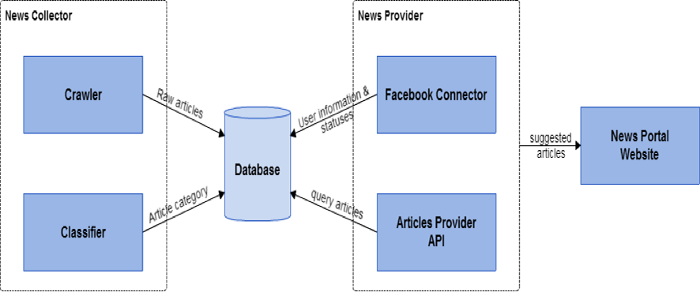
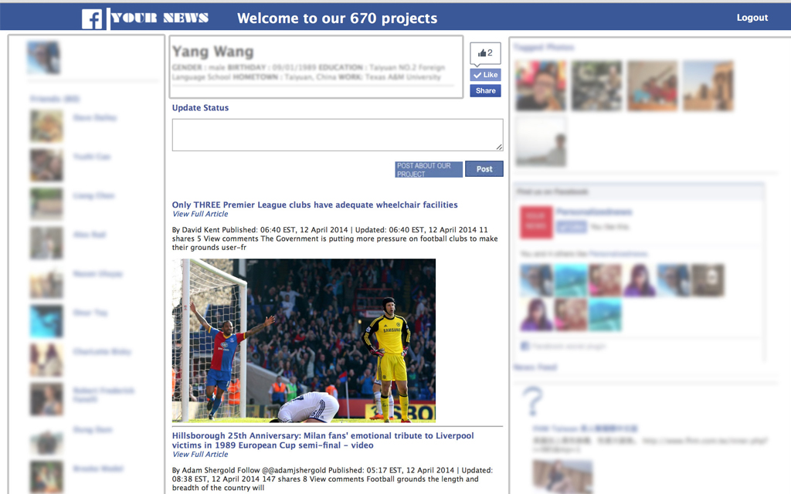
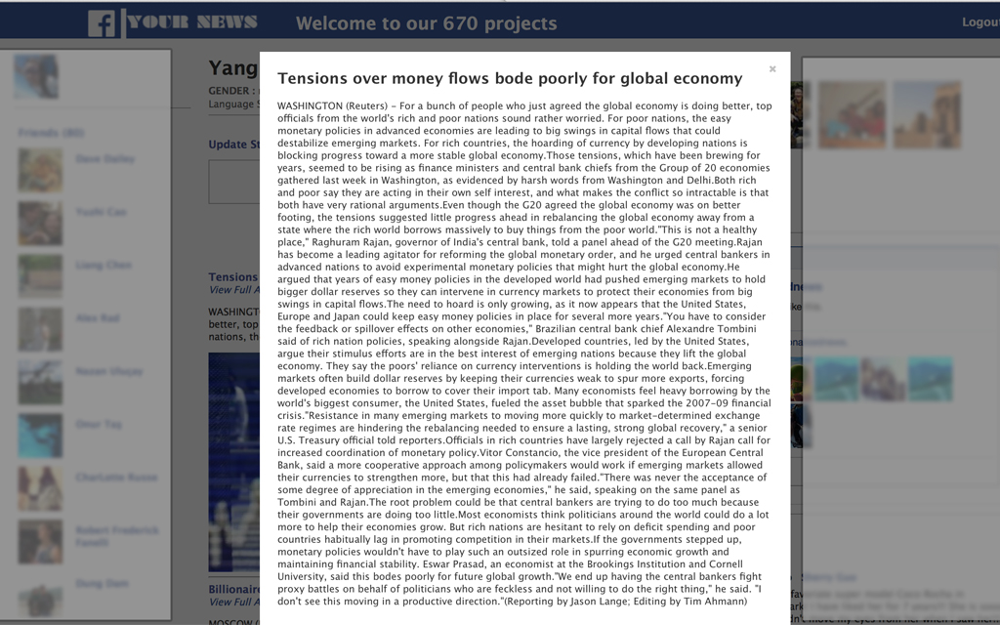

670 Project
A personalized news website
Big Questions
A huge number of news articles generated every day, is this possible to combine them into just one news portal?
By viewing a facebook profile, can we understand about the characteristics, concerns and interests of a person? How can it help?
Our Product
A Personalized News Portal
System Overview

Classifying News Articles
News category is an important factor in the suggesting engine
Naive Bayes for classifier
Reuters Corpora for training and testing dataset
~11k articles
115 labels
News Provider
Using user's Facebook info to get related articles
Re-ranking the articles if it is the same as user's like in Facebook


Conclusion
Current Results
Total articles crawled: 5k
News providers: Reuters, NYTimes, Dailymail
Classifier accuracy: ~80%
Future Work
Thank You!